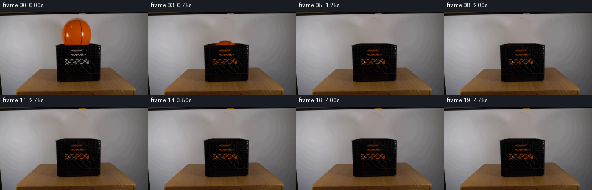
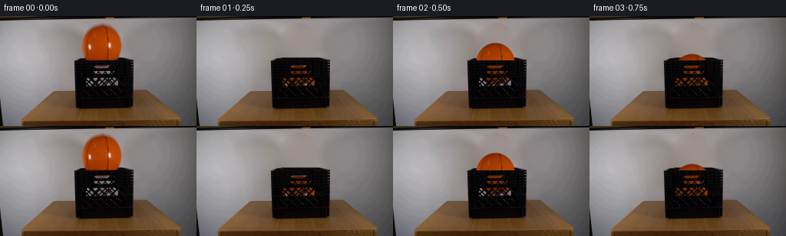

CODING AGENTS AS PIXEL WORLD MODELS
traex/GPT-6-Astra · 0014
点击播放 · 原生 RGB 像素
逐轮保存的候选
回放视频、检查图与代码变化。
每份候选均可单独播放。实际图片检查记录在下方工具轨迹中。
候选 01播放与检查图
点击播放 · 原生 RGB 像素


展开代码变化
--- 上一保存版本
+++ 本次保存版本
@@ -0,0 +1,235 @@
+from pathlib import Path
+import numpy as np
+from PIL import Image, ImageDraw
+import cv2
+from scipy.ndimage import gaussian_filter, maximum_filter
+from scipy.sparse import coo_matrix
+from scipy.sparse.linalg import spsolve
+import artifact_io
+
+ROOT = Path(__file__).resolve().parent
+SOURCE = np.asarray(Image.open(ROOT / 'first_frame.png').convert('RGB')).astype(np.float64)
+H, W = SOURCE.shape[:2]
+Y, X = np.mgrid[:H, :W].astype(np.float64)
+CX, CY, RX, RY = 132.143, 38.741, 25.48, 27.45
+
+
+def polygon_mask(points, scale=6):
+ p = Image.new('L', (W*scale, H*scale))
+ d = ImageDraw.Draw(p)
+ d.polygon([(round(x*scale), round(y*scale)) for x, y in points], fill=255)
+ return np.asarray(p.resize((W,H), Image.Resampling.LANCZOS)).astype(float)/255
+
+
+# The wall and crate remain a photographic plate. Only the released ball,
+# its soft wall shadow, and the light visible through the crate are animated.
+crate = polygon_mask([(97,58),(109,53.5),(159.5,53.5),(174,58),
+ (173,117.7),(169,120),(102,121),(98,118)])
+wall = (1-crate) * np.clip((Y-5)/3,0,1) * np.clip((97-Y)/4,0,1)
+
+def shadow(cy, cx):
+ # A broad, soft shadow falls to the left on the backdrop.
+ dx = cx-CX
+ dy = cy-CY
+ return (13*np.exp(-.5*(((X-(105+dx*.9))/17)**2+
+ ((Y-(35+dy*.82))/22)**2)) * wall)
+
+plate = SOURCE + shadow(CY,CX)[...,None] * np.array([.98,1,1.04])
+
+# Smooth harmonic continuation of the wall through the original silhouette.
+# This is a pixel-domain boundary value solve, not a learned inpainting model.
+ell = ((X-CX)/27.25)**2 + ((Y-CY)/29.8)**2
+missing = (ell<1) & (Y<54) & (Y>8)
+ids = np.full((H,W), -1, int)
+ids[missing] = np.arange(missing.sum())
+rows=[]; cols=[]; vals=[]
+b = np.zeros((missing.sum(),3))
+for yy,xx in np.argwhere(missing):
+ i=ids[yy,xx]
+ rows.append(i); cols.append(i); vals.append(4.)
+ for dy,dx in [(1,0),(-1,0),(0,1),(0,-1)]:
+ y,x=yy+dy,xx+dx
+ if missing[y,x]:
+ rows.append(i); cols.append(ids[y,x]); vals.append(-1.)
+ else:
+ # A wall boundary just above the rim, rather than the ball or rim.
+ if y==54:
+ f=np.clip((x-106)/53,0,1)
+ b[i] += (1-f)*plate[52,106] + f*plate[52,159]
+ else:
+ b[i] += plate[y,x]
+A=coo_matrix((vals,(rows,cols)),shape=(missing.sum(),missing.sum())).tocsr()
+plate[missing] = spsolve(A,b)
+# Photographic-scale grain is deterministic and vanishing at the old boundary.
+rng=np.random.default_rng(219)
+noise=gaussian_filter(rng.normal(0,.72,(H,W)),.48)
+dist=cv2.distanceTransform(missing.astype(np.uint8),cv2.DIST_L2,5)
+plate += (noise*np.clip(dist/5,0,1))[...,None]
+
+# Continue the back rim and dark interior across the formerly obscured opening.
+# The front lip is the original image, including its small highlights.
+for yy in range(54,59):
+ for xx in range(109,158):
+ if yy==54:
+ weight=np.clip((xx-108)/3,0,1)*np.clip((158-xx)/4,0,1)
+ col=np.array([65.,59.,58.]) + noise[yy,xx]
+ elif yy==55:
+ weight=np.clip((xx-109)/3,0,1)*np.clip((157-xx)/3,0,1)
+ col=np.array([10.,7.,8.])+noise[yy,xx]*.6
+ elif yy==56:
+ weight=np.clip((xx-110)/2,0,1)*np.clip((155-xx)/2,0,1)
+ col=np.array([8.,6.,7.])+noise[yy,xx]*.6
+ elif yy==57:
+ weight=np.clip((xx-111)/2,0,1)*np.clip((153-xx)/2,0,1)
+ col=np.array([10.,8.,9.])+noise[yy,xx]*.8
+ else:
+ weight=np.clip((xx-111)/3,0,1)*np.clip((143-xx)/4,0,1)
+ col=np.array([15.,13.,14.])+noise[yy,xx]
+ plate[yy,xx] = (1-weight)*plate[yy,xx]+weight*col
+
+# Remove the tiny part of the initial ball seen through the handle. This
+# restores the neutral backdrop; the same opening receives the moving ball.
+for yy in range(64,69):
+ for xx in range(123,145):
+ p=SOURCE[yy,xx]
+ neutral=np.array([p[0],p[0]-6,p[0]-9])
+ warm=np.clip((p[0]-p[1]-8)/15,0,1)
+ plate[yy,xx]=p*(1-warm)+neutral*warm
+
+# Transparent areas of the original lattice, inferred from measured RGB.
+# The black ribs, texture, and anti-aliased edges are preserved exactly.
+luma=plate.mean(axis=2)
+hole_region = (((Y>=64)&(Y<=68)&(X>=121)&(X<=145)) |
+ ((Y>=71)&(Y<=76)&(X>=121)&(X<=157)) |
+ ((Y>=80)&(Y<=92)&(X>=110)&(X<=161)))
+bg_r=np.clip(151-(X-110)*.51-(Y-65)*.06,120,151)
+hole_bg=np.stack([bg_r,bg_r-6,bg_r-9],axis=-1)
+hole_open=np.clip((luma-11)/(hole_bg.mean(2)-11),0,1)*hole_region
+hole_open[luma<22]=0
+
+# Recover a complete photographic ball texture. Its hidden lower cap is
+# continued from the same object's upper cap, with a soft shading join.
+tex = SOURCE.copy()
+for yy in range(54,69):
+ yr=2*CY-yy
+ reflected=cv2.getRectSubPix(SOURCE.astype(np.float32),(W,1),((W-1)/2,yr))[0]
+ if yy<=57:
+ w=np.clip((yy-54)/4,0,1)*.12
+ tex[yy]=(1-w)*SOURCE[yy]+w*reflected*.90
+ else:
+ tex[yy]=reflected*.90
+
+# Eliminate background fringe in the texture while retaining the pebbled
+# surface, black channels, and the white printing of the source ball.
+rho=np.sqrt(((X-CX)/RX)**2+((Y-CY)/RY)**2)
+edge=rho>.90
+for yy,xx in np.argwhere(edge & (rho<1.16) & (Y<58) & (Y>9)):
+ # Estimate the local unoccluded wall (or black interior below the back rim).
+ bg=plate[yy,xx]-shadow(CY,CX)[yy,xx]*np.array([.98,1,1.04])
+ if yy>=55: bg=np.array([8.,6.,7.])
+ # A nearest interior sample supplies the leather color at the contour.
+ ux=(xx-CX)/RX; uy=(yy-CY)/RY
+ q=np.sqrt(ux*ux+uy*uy)
+ ix=int(round(CX+ux/q*RX*.87)); iy=int(round(CY+uy/q*RY*.87))
+ leather=tex[np.clip(iy,12,66),np.clip(ix,108,156)]
+ if leather[0]<75 or leather[2]>90:
+ leather=np.array([157.,57.,3.])
+ original=SOURCE[yy,xx]
+ v=leather-bg
+ alpha=np.clip(np.dot(original-bg,v)/(np.dot(v,v)+1e-6),0,1)
+ if alpha>.15:
+ color=(original-bg*(1-alpha))/max(alpha,.15)
+ tex[yy,xx]=np.clip(color,[70,15,0],[205,110,65])
+ else:
+ tex[yy,xx]=leather
+
+# An exterior extension allows sub-pixel resampling without a gray fringe.
+for yy,xx in np.argwhere((rho>=1)&(rho<1.5)):
+ ux=(xx-CX)/RX; uy=(yy-CY)/RY; q=np.hypot(ux,uy)
+ ix=int(round(CX+ux/q*RX*.96)); iy=int(round(CY+uy/q*RY*.96))
+ tex[yy,xx]=tex[np.clip(iy,11,66),np.clip(ix,107,158)]
+tex=tex.astype(np.float32)
+
+# Real-time gravity, brief compliant contacts, and dissipative rebounds.
+# Screen-space length is fixed by the measured diameter in the first frame.
+G=1780.
+FLOOR=89.0
+REST=.75
+CONTACT=.043
+TC=np.sqrt(2*(FLOOR-CY)/G)
+V0=G*TC
+
+
+def dynamics(t):
+ if t<TC:
+ return CY+.5*G*t*t, 1., .008*t
+ t-=TC
+ vin=V0
+ impacts=0
+ while vin>13:
+ if t<CONTACT:
+ # Volume-conserving transient flattening at the bottom.
+ compression=.073*(vin/V0)*np.sin(np.pi*t/CONTACT)
+ return FLOOR+RY*compression, 1-compression, .008*TC+.035*impacts
+ t-=CONTACT
+ v=REST*vin
+ flight=2*v/G
+ if t<flight:
+ return FLOOR-v*t+.5*G*t*t,1., .008*TC+.035*impacts+.035*t/flight
+ t-=flight
+ vin=v
+ impacts+=1
+ return FLOOR,1., .008*TC+.035*impacts
+
+
+def render(t):
+ cy,sy,angle=dynamics(max(t,0))
+ # Very small drift is arrested by the confined interior after the impacts.
+ cx=CX+1.4*(1-np.exp(-t*2.1))
+ sx=1/np.sqrt(sy)
+ # A plane remap keeps all fine source details; the limited rotation is
+ # well below the amount at which missing surface detail would be exposed.
+ xx=(X-cx)/sx; yy=(Y-cy)/sy
+ ca,sa=np.cos(angle),np.sin(angle)
+ tx=CX+ca*xx+sa*yy
+ ty=CY-sa*xx+ca*yy
+ rr=np.sqrt((xx/RX)**2+(yy/RY)**2)
+ alpha=np.clip((1-rr)*min(RX*sx,RY*sy)+.50,0,1)
+ color=cv2.remap(tex,tx.astype(np.float32),ty.astype(np.float32),
+ cv2.INTER_LINEAR,borderMode=cv2.BORDER_REPLICATE).astype(float)
+ base=plate-shadow(cy,cx)[...,None]*np.array([.98,1,1.04])
+ # At the top edge the front wall hides the sphere. The ball stays in front
+ # of the back rim, and behind the original near rim throughout its flight.
+ top_visibility=np.clip(58.0-Y,0,1)
+ open_alpha=alpha*top_visibility
+ # Mild loss of fill light as it enters the crate.
+ shade=1-.055*np.clip((cy-CY)/(FLOOR-CY),0,1)
+ out=base*(1-open_alpha[...,None])+color*shade*open_alpha[...,None]
+ # The physical silhouette, rather than orange paint on the ribs, appears
+ # behind each hole. Light is lower in the black plastic interior.
+ interior_color=color*(.78+.13*np.clip((89-cy)/40,0,1))
+ through=hole_open*alpha
+ out += through[...,None]*(interior_color-hole_bg)
+ return np.clip(out,0,255)
+
+
+def main():
+ frames=[SOURCE.astype(np.uint8)]
+ for n in range(1,20):
+ t=n/4
+ # A short, centered photographic exposure avoids stepped fast motion.
+ exposure=[render(t+dt) for dt in np.linspace(-1/160,1/160,5)]
+ im=np.rint(np.mean(exposure,axis=0)).clip(0,255).astype(np.uint8)
+ frames.append(im)
+ frames=np.stack(frames)
+ assert frames.shape==(20,144,256,3)
+ assert np.array_equal(frames[0],SOURCE.astype(np.uint8))
+ (ROOT/'.tmp').mkdir(exist_ok=True)
+ Image.fromarray(np.uint8(np.clip(plate,0,255))).save(ROOT/'.tmp'/'clean_plate.png')
+ np.save(ROOT/'.tmp'/'trajectory.npy',np.array([[i/4,*dynamics(i/4)] for i in range(20)]))
+ artifact_io.save(frames,ROOT)
+ print('Saved',frames.shape,frames.dtype)
+ print('center y:',[round(dynamics(i/4)[0],2) for i in range(20)])
+
+if __name__=='__main__':
+ main()
可观测工具轨迹
实际执行的命令与返回图片。
命令 1exit 0
/bin/bash -lc "ls -la && cat prompt.txt && printf '\\n--- RULES ---\\n' && cat GENERATION_RULES.md"
命令 2exit 0
/bin/bash -lc "cat artifact_io.py && python - <<'PY'
from PIL import Image
import numpy as np
im=np.array(Image.open('first_frame.png'))
print('shape',im.shape)
for y in range(0,144,4):
s=''
for x in range(0,256,4):
r,g,b=im[y:y+4,x:x+4].mean((0,1))
if r>g*1.5 and r>b*1.6 and r>95:c='O'
elif max(r,g,b)<45:c='#'
elif max(r,g,b)<85:c='x'
elif r>g*1.15 and g>b*1.1:c='w'
elif min(r,g,b)>190:c=' '
elif min(r,g,b)>140:c='.'
elif min(r,g,b)>95:c='-'
else:c='+'
s+=c
print(f'{y:3d} {s}')
PY"命令 3exit 0
/bin/bash -lc "python - <<'PY'
from PIL import Image
import numpy as np
im=np.array(Image.open('first_frame.png')).astype(float)
# luminance detail for ball and crate
for y in range(6,125,2):
s=''
for x in range(88,182):
r,g,b=im[y:y+2,x].mean(0)
if r>1.6*g and r>1.8*b and r>85:
c= 'O' if r>180 else 'o' if r>125 else ':'
else:
z=(r+g+b)/3
c='@' if z<22 else '#' if z<38 else 'X' if z<60 else 'x' if z<85 else '+' if z<110 else '-' if z<140 else '.' if z<175 else ' '
s+=c
print(f'{y:3} {s}')
print('orange ranges')
mask=(im[:,:,0]>1.6*im[:,:,1])&(im[:,:,0]>1.8*im[:,:,2])&(im[:,:,0]>85)
for y in range(7,63):
xs=np.where(mask[y,85:185])[0]+85
if len(xs):print(y,xs.min(),xs.max(),len(xs))
PY"命令 4exit 0
/bin/bash -lc "python - <<'PY'
import numpy as np
from PIL import Image
im=np.array(Image.open('first_frame.png'))
# individual RGB and grayscale map of opening
for y in range(48,71):
s=''
for x in range(91,179):
r,g,b=map(float,im[y,x]); z=(r+g+b)/3
s+=('O' if r>1.6*g and r>1.8*b and r>85 else '@' if z<20 else '#' if z<40 else 'x' if z<70 else '+' if z<100 else '-' if z<130 else '.' if z<170 else ' ')
print(y,s)
print('\\nRGB surface samples')
for y in [8,12,18,24,32,40,48,53,54,55,56,57,58,59,60,63,65,66,67,71,73,75,80,82,85,88,90,93,100,110,117,121]:
print(y,[(x,tuple(im[y,x])) for x in [94,96,98,100,104,107,110,114,120,128,132,136,140,148,155,160,165,170,173,180]])
PY"命令 5exit 0
/bin/bash -lc "python - <<'PY'
import importlib.util
for n in ['numpy','scipy','cv2']:
print(n, bool(importlib.util.find_spec(n)))
from PIL import Image
import numpy as np
im=np.array(Image.open('first_frame.png')).astype(float)
print('crate luminance every pixel. x 96 through 174')
for y in range(53,96):
s=''
for x in range(96,175):
v=im[y,x].mean(); c=' ' if v>125 else '.' if v>105 else '-' if v>80 else '+' if v>55 else 'x' if v>35 else '#' if v>15 else '@'
if im[y,x,0]>1.6*im[y,x,1] and im[y,x,0]>85:c='O'
s+=c
print(f'{y:2} {s}')
PY"命令 6exit 0
/bin/bash -lc "python - <<'PY'
from PIL import Image
import numpy as np
im=np.array(Image.open('first_frame.png')).astype(float)
a=im.mean(2)
print('mean RGB 4x4 patches of wall (y6:58 x56:192)')
print(' '+' '.join(f'{x:3}' for x in range(56,193,4)))
for y in range(6,58,4):
print(f'{y:3d}: '+' '.join(f'{a[y:y+4,x:x+4].mean():3.0f}' for x in range(56,193,4)))
PY"命令 7exit 0
/bin/bash -lc "python - <<'PY'
import numpy as np
from PIL import Image
from scipy.optimize import least_squares
im=np.array(Image.open('first_frame.png')).astype(float)
m=(im[:,:,0]>1.6*im[:,:,1])&(im[:,:,0]>1.8*im[:,:,2])&(im[:,:,0]>85)
edge=[]
for y in range(13,54):
xx=np.where(m[y,100:165])[0]+100
if len(xx):edge +=[(xx.min()-.3,y),(xx.max()+.3,y)]
p=np.array(edge)
f=least_squares(lambda v:((p[:,0]-v[0])/v[2])**2+((p[:,1]-v[1])/v[3])**2-1,[132,39,25,28])
print('ellipse',f.x,'rms',np.sqrt((f.fun**2).mean()))
for y in [58,63,64,65,66,67,68]:
print(y,[(x,im[y,x].astype(int).tolist()) for x in range(122,151,2)])
PY"命令 8exit 0
/bin/bash -lc "mkdir -p .tmp && cat > generate.py <<'PY'
from pathlib import Path
import numpy as np
from PIL import Image, ImageDraw
import cv2
from scipy.ndimage import gaussian_filter, maximum_filter
from scipy.sparse import coo_matrix
from scipy.sparse.linalg import spsolve
import artifact_io
ROOT = Path(__file__).resolve().parent
SOURCE = np.asarray(Image.open(ROOT / 'first_frame.png').convert('RGB')).astype(np.float64)
H, W = SOURCE.shape[:2]
Y, X = np.mgrid[:H, :W].astype(np.float64)
CX, CY, RX, RY = 132.143, 38.741, 25.48, 27.45
def polygon_mask(points, scale=6):
p = Image.new('L', (W*scale, H*scale))
d = ImageDraw.Draw(p)
d.polygon([(round(x*scale), round(y*scale)) for x, y in points], fill=255)
return np.asarray(p.resize((W,H), Image.Resampling.LANCZOS)).astype(float)/255
# The wall and crate remain a photographic plate. Only the released ball,
# its soft wall shadow, and the light visible through the crate are animated.
crate = polygon_mask([(97,58),(109,53.5),(159.5,53.5),(174,58),
(173,117.7),(169,120),(102,121),(98,118)])
wall = (1-crate) * np.clip((Y-5)/3,0,1) * np.clip((97-Y)/4,0,1)
def shadow(cy, cx):
# A broad, soft shadow falls to the left on the backdrop.
dx = cx-CX
dy = cy-CY
return (13*np.exp(-.5*(((X-(105+dx*.9))/17)**2+
((Y-(35+dy*.82))/22)**2)) * wall)
plate = SOURCE + shadow(CY,CX)[...,None] * np.array([.98,1,1.04])
# Smooth harmonic continuation of the wall through the original silhouette.
# This is a pixel-domain boundary value solve, not a learned inpainting model.
ell = ((X-CX)/27.25)**2 + ((Y-CY)/29.8)**2
missing = (ell<1) & (Y<54) & (Y>8)
ids = np.full((H,W), -1, int)
ids[missing] = np.arange(missing.sum())
rows=[]; cols=[]; vals=[]
b = np.zeros((missing.sum(),3))
for yy,xx in np.argwhere(missing):
i=ids[yy,xx]
rows.append(i); cols.append(i); vals.append(4.)
for dy,dx in [(1,0),(-1,0),(0,1),(0,-1)]:
y,x=yy+dy,xx+dx
if missing[y,x]:
rows.append(i); cols.append(ids[y,x]); vals.append(-1.)
else:
# A wall boundary just above the rim, rather than the ball or rim.
if y==54:
f=np.clip((x-106)/53,0,1)
b[i] += (1-f)*plate[52,106] + f*plate[52,159]
else:
b[i] += plate[y,x]
A=coo_matrix((vals,(rows,cols)),shape=(missing.sum(),missing.sum())).tocsr()
plate[missing] = spsolve(A,b)
# Photographic-scale grain is deterministic and vanishing at the old boundary.
rng=np.random.default_rng(219)
noise=gaussian_filter(rng.normal(0,.72,(H,W)),.48)
dist=cv2.distanceTransform(missing.astype(np.uint8),cv2.DIST_L2,5)
plate += (noise*np.clip(dist/5,0,1))[...,None]
# Continue the back rim and dark interior across the formerly obscured opening.
# The front lip is the original image, including its small highlights.
for yy in range(54,59):
for xx in range(109,158):
if yy==54:
weight=np.clip((xx-108)/3,0,1)*np.clip((158-xx)/4,0,1)
col=np.array([65.,59.,58.]) + noise[yy,xx]
elif yy==55:
weight=np.clip((xx-109)/3,0,1)*np.clip((157-xx)/3,0,1)
col=np.array([10.,7.,8.])+noise[yy,xx]*.6
elif yy==56:
weight=np.clip((xx-110)/2,0,1)*np.clip((155-xx)/2,0,1)
col=np.array([8.,6.,7.])+noise[yy,xx]*.6
elif yy==57:
weight=np.clip((xx-111)/2,0,1)*np.clip((153-xx)/2,0,1)
col=np.array([10.,8.,9.])+noise[yy,xx]*.8
else:
weight=np.clip((xx-111)/3,0,1)*np.clip((143-xx)/4,0,1)
col=np.array([15.,13.,14.])+noise[yy,xx]
plate[yy,xx] = (1-weight)*plate[yy,xx]+weight*col
# Remove the tiny part of the initial ball seen through the handle. This
# restores the neutral backdrop; the same opening receives the moving ball.
for yy in range(64,69):
for xx in range(123,145):
p=SOURCE[yy,xx]
neutral=np.array([p[0],p[0]-6,p[0]-9])
warm=np.clip((p[0]-p[1]-8)/15,0,1)
plate[yy,xx]=p*(1-warm)+neutral*warm
# Transparent areas of the original lattice, inferred from measured RGB.
# The black ribs, texture, and anti-aliased edges are preserved exactly.
luma=plate.mean(axis=2)
hole_region = (((Y>=64)&(Y<=68)&(X>=121)&(X<=145)) |
((Y>=71)&(Y<=76)&(X>=121)&(X<=157)) |
((Y>=80)&(Y<=92)&(X>=110)&(X<=161)))
bg_r=np.clip(151-(X-110)*.51-(Y-65)*.06,120,151)
hole_bg=np.stack([bg_r,bg_r-6,bg_r-9],axis=-1)
hole_open=np.clip((luma-11)/(hole_bg.mean(2)-11),0,1)*hole_region
hole_open[luma<22]=0
# Recover a complete photographic ball texture. Its hidden lower cap is
# continued from the same object's upper cap, with a soft shading join.
tex = SOURCE.copy()
for yy in range(54,69):
yr=2*CY-yy
reflected=cv2.getRectSubPix(SOURCE.astype(np.float32),(W,1),((W-1)/2,yr))[0]
if yy<=57:
w=np.clip((yy-54)/4,0,1)*.12
tex[yy]=(1-w)*SOURCE[yy]+w*reflected*.90
else:
tex[yy]=reflected*.90
# Eliminate background fringe in the texture while retaining the pebbled
# surface, black channels, and the white printing of the source ball.
rho=np.sqrt(((X-CX)/RX)**2+((Y-CY)/RY)**2)
edge=rho>.90
for yy,xx in np.argwhere(edge & (rho<1.16) & (Y<58) & (Y>9)):
# Estimate the local unoccluded wall (or black interior below the back rim).
bg=plate[yy,xx]-shadow(CY,CX)[yy,xx]*np.array([.98,1,1.04])
if yy>=55: bg=np.array([8.,6.,7.])
# A nearest interior sample supplies the leather color at the contour.
ux=(xx-CX)/RX; uy=(yy-CY)/RY
q=np.sqrt(ux*ux+uy*uy)
ix=int(round(CX+ux/q*RX*.87)); iy=int(round(CY+uy/q*RY*.87))
leather=tex[np.clip(iy,12,66),np.clip(ix,108,156)]
if leather[0]<75 or leather[2]>90:
leather=np.array([157.,57.,3.])
original=SOURCE[yy,xx]
v=leather-bg
alpha=np.clip(np.dot(original-bg,v)/(np.dot(v,v)+1e-6),0,1)
if alpha>.15:
color=(original-bg*(1-alpha))/max(alpha,.15)
tex[yy,xx]=np.clip(color,[70,15,0],[205,110,65])
else:
tex[yy,xx]=leather
# An exterior extension allows sub-pixel resampling without a gray fringe.
for yy,xx in np.argwhere((rho>=1)&(rho<1.5)):
ux=(xx-CX)/RX; uy=(yy-CY)/RY; q=np.hypot(ux,uy)
ix=int(round(CX+ux/q*RX*.96)); iy=int(round(CY+uy/q*RY*.96))
tex[yy,xx]=tex[np.clip(iy,11,66),np.clip(ix,107,158)]
tex=tex.astype(np.float32)
# Real-time gravity, brief compliant contacts, and dissipative rebounds.
# Screen-space length is fixed by the measured diameter in the first frame.
G=1780.
FLOOR=89.0
REST=.75
CONTACT=.043
TC=np.sqrt(2*(FLOOR-CY)/G)
V0=G*TC
def dynamics(t):
if t<TC:
return CY+.5*G*t*t, 1., .008*t
t-=TC
vin=V0
impacts=0
while vin>13:
if t<CONTACT:
# Volume-conserving transient flattening at the bottom.
compression=.073*(vin/V0)*np.sin(np.pi*t/CONTACT)
return FLOOR+RY*compression, 1-compression, .008*TC+.035*impacts
t-=CONTACT
v=REST*vin
flight=2*v/G
if t<flight:
return FLOOR-v*t+.5*G*t*t,1., .008*TC+.035*impacts+.035*t/flight
t-=flight
vin=v
impacts+=1
return FLOOR,1., .008*TC+.035*impacts
def render(t):
cy,sy,angle=dynamics(max(t,0))
# Very small drift is arrested by the confined interior after the impacts.
cx=CX+1.4*(1-np.exp(-t*2.1))
sx=1/np.sqrt(sy)
# A plane remap keeps all fine source details; the limited rotation is
# well below the amount at which missing surface detail would be exposed.
xx=(X-cx)/sx; yy=(Y-cy)/sy
ca,sa=np.cos(angle),np.sin(angle)
tx=CX+ca*xx+sa*yy
ty=CY-sa*xx+ca*yy
rr=np.sqrt((xx/RX)**2+(yy/RY)**2)
alpha=np.clip((1-rr)*min(RX*sx,RY*sy)+.50,0,1)
color=cv2.remap(tex,tx.astype(np.float32),ty.astype(np.float32),
cv2.INTER_LINEAR,borderMode=cv2.BORDER_REPLICATE).astype(float)
base=plate-shadow(cy,cx)[...,None]*np.array([.98,1,1.04])
# At the top edge the front wall hides the sphere. The ball stays in front
# of the back rim, and behind the original near rim throughout its flight.
top_visibility=np.clip(58.0-Y,0,1)
open_alpha=alpha*top_visibility
# Mild loss of fill light as it enters the crate.
shade=1-.055*np.clip((cy-CY)/(FLOOR-CY),0,1)
out=base*(1-open_alpha[...,None])+color*shade*open_alpha[...,None]
# The physical silhouette, rather than orange paint on the ribs, appears
# behind each hole. Light is lower in the black plastic interior.
interior_color=color*(.78+.13*np.clip((89-cy)/40,0,1))
through=hole_open*alpha
out += through[...,None]*(interior_color-hole_bg)
return np.clip(out,0,255)
def main():
frames=[SOURCE.astype(np.uint8)]
for n in range(1,20):
t=n/4
# A short, centered photographic exposure avoids stepped fast motion.
exposure=[render(t+dt) for dt in np.linspace(-1/160,1/160,5)]
im=np.rint(np.mean(exposure,axis=0)).clip(0,255).astype(np.uint8)
frames.append(im)
frames=np.stack(frames)
assert frames.shape==(20,144,256,3)
assert np.array_equal(frames[0],SOURCE.astype(np.uint8))
(ROOT/'.tmp').mkdir(exist_ok=True)
Image.fromarray(np.uint8(np.clip(plate,0,255))).save(ROOT/'.tmp'/'clean_plate.png')
np.save(ROOT/'.tmp'/'trajectory.npy',np.array([[i/4,*dynamics(i/4)] for i in range(20)]))
artifact_io.save(frames,ROOT)
print('Saved',frames.shape,frames.dtype)
print('center y:',[round(dynamics(i/4)[0],2) for i in range(20)])
if __name__=='__main__':
main()
PY
python generate.py"命令 9exit 0
/bin/bash -lc "python - <<'PY'
from PIL import Image
import numpy as np
for idx in [0,1,2,3,4,9,19]:
im=np.array(Image.open(f'frames/{idx:02d}.png')).astype(float)
print('\\nFRAME',idx)
for y in range(8,96,2):
s=''
for x in range(96,176):
r,g,b=im[y:y+2,x].mean(0); z=(r+g+b)/3
if r>1.6*g and r>1.8*b and r>70: c='O' if r>135 else 'o' if r>100 else ':'
else:c='@' if z<18 else '#' if z<40 else 'x' if z<65 else '+' if z<90 else '-' if z<120 else '.' if z<160 else ' '
s+=c
print(f'{y:3d} {s}')
a=np.array(Image.open('frames/00.png')).astype(int); b=np.array(Image.open('frames/19.png')).astype(int)
print('background max difference outside ROI',abs(a-b)[np.indices(a.shape[:2])[0]>96].max())
PY"命令 10exit 0
/bin/bash -lc "python - <<'PY'
from pathlib import Path
from PIL import Image
import numpy as np
frames=np.stack([np.array(Image.open(f'frames/{i:02d}.png')) for i in range(20)])
assert frames.shape==(20,144,256,3) and frames.dtype==np.uint8
assert np.array_equal(frames[0],np.array(Image.open('first_frame.png')))
a=np.load('pixels.npz')['pixels']
assert a.shape==(144,256,20)
assert np.array_equal(a[:,:,0],(frames[0,:, :,0].astype('uint32')<<16)|(frames[0,:,:,1].astype('uint32')<<8)|frames[0,:,:,2])
print('Validation passed: 20 RGB frames; 256Ã144; first frame identical.')
print('Artifacts:',', '.join(p.name for p in [Path('index.html'),Path('pixels.npz'),Path('generate.py')] if p.exists()))
PY"保存候选 1 份；完成命令 10 次；可验证图片返回 0 张。原始 API 响应与完整日志保留在本地。